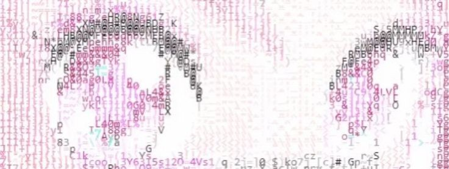

My favorite Music videoへようこそ

このサイトでは、私が好きなミュージックビデオ（MV）の魅力を紹介します。
MVは音楽だけでなく、映像表現やストーリー、ファッションなど、
さまざまな魅力が詰まった作品です。
映像演出や世界観に注目しながら、
おすすめのMVを分かりやすく紹介していきます。

このサイトでは、私が好きなミュージックビデオ（MV）の魅力を紹介します。
MVは音楽だけでなく、映像表現やストーリー、ファッションなど、
さまざまな魅力が詰まった作品です。
映像演出や世界観に注目しながら、
おすすめのMVを分かりやすく紹介していきます。
好きなMVを1つずつ取り上げ、 ストーリーや色使い、カメラワークなどを解説します。 更新スケジュール：毎週日曜日に更新予定です。
特定のMVについて、演出意図や隠されたメッセージを考察します。 作品によっては複数回に分けて詳しく紹介します。 更新スケジュール：不定期更新です。
最終更新日：